远程拷贝scp
回忆
- 上次我们使用了scp
- 远程进行文件拷贝
- 还是挺方便的
- 有一些参数
- 这样拷贝文件真的很方便
- 但是有的时候想要执行一些命令
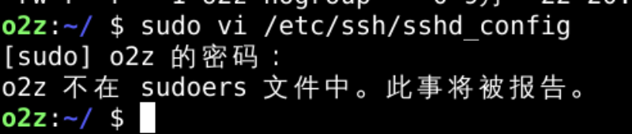
构建环境
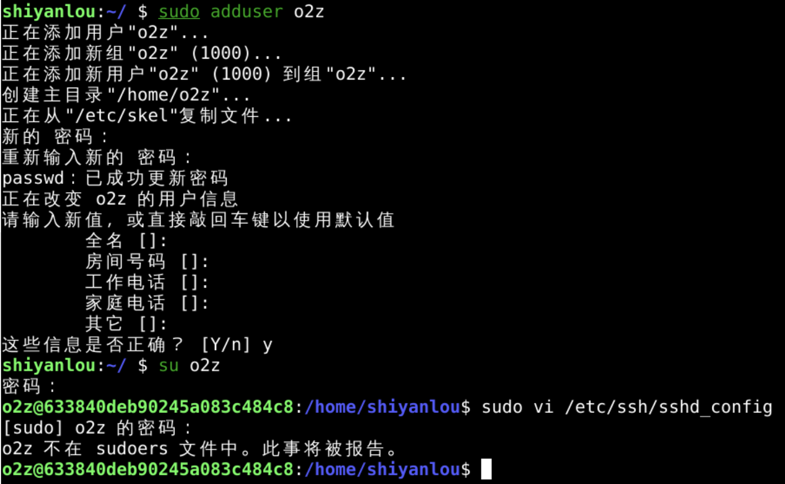
- 我们需要想办法把o2z放到sudoers里面
- 就像shiyanlou一样
- 先观察一下这两个账号的不同
不同
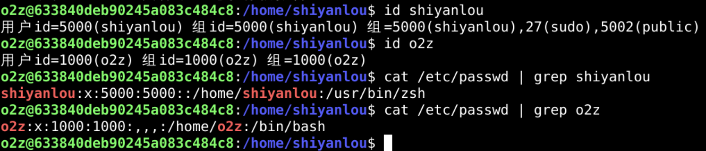
- shiyanlou(5000)之所以可以执行sudo的原因是
- shiyanlou(5000)属于sudo(27)这个组
- 那为什么shiyanlou(5000)可以属于这个组呢？
/etc/group
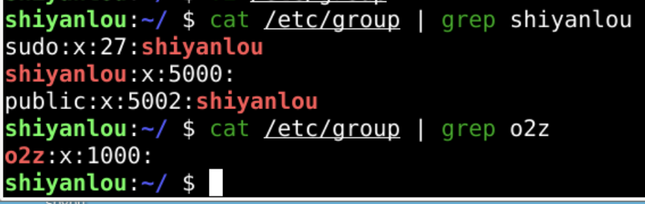
- shiyanlou(5000)这个用户在/etc/group中对应3条记录
- sudo(27)组
- shiyanlou(5000)组
- public(5002)组
- o2z(1000)这个用户只对应一条记录
- 如何把o2z(1000)添加到sudo(27)组呢？
sudo
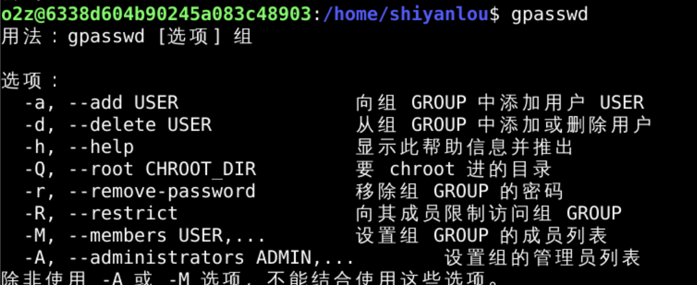
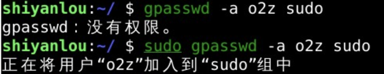
查看结果
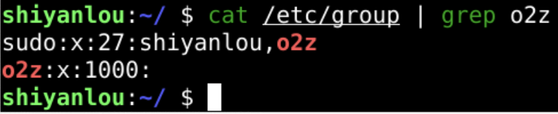
- 现在sudo组里面有两个用户了
- 可以用sudo这个命令了么？
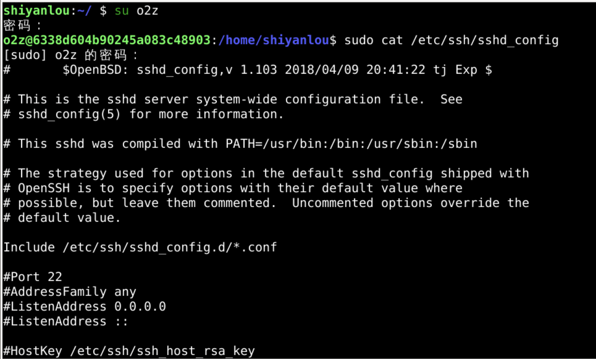
- 确实可以运行sudo了
- 但是还需要输入o2z(1000)的密码
- 为什么shiyanlou(5000)可以直接运行sudo
搜索
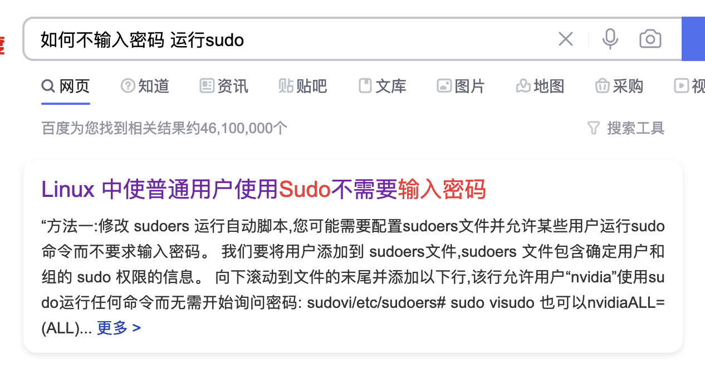
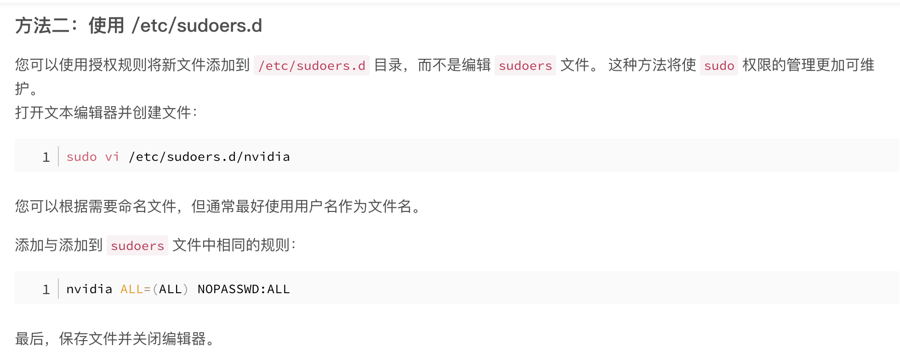
观察
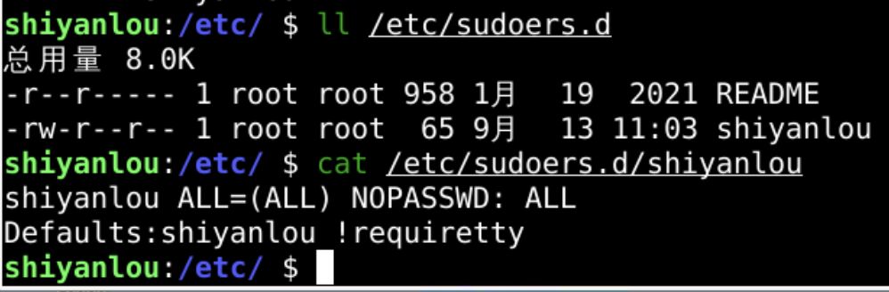
- 确实有这么一个shiyanlou文件
- 位于/etc/sudoers.d中
- 是否可以将其复制为o2z呢？
复制并修改
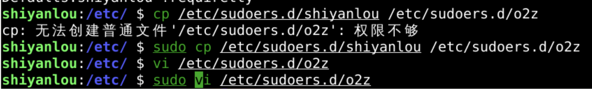
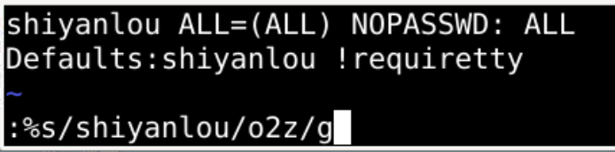
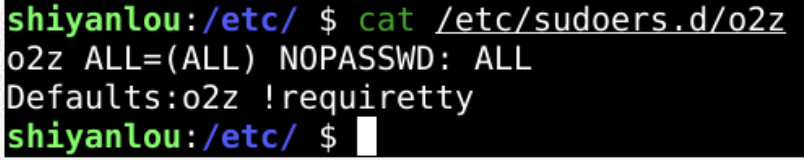
结果
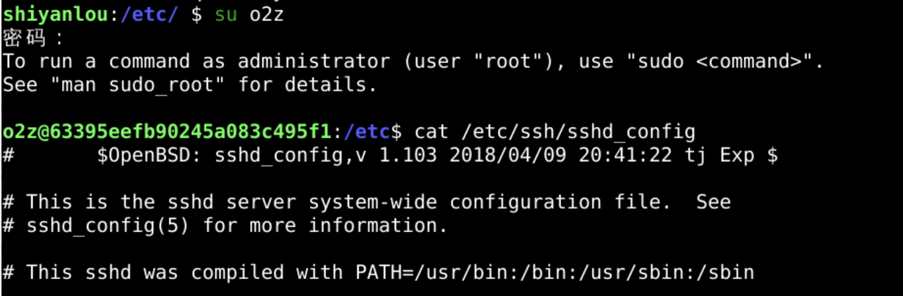
- 确实可以不用再输入o2z的密码了
- 不过这个sudo到底是什么意思呢？
灵魂三问
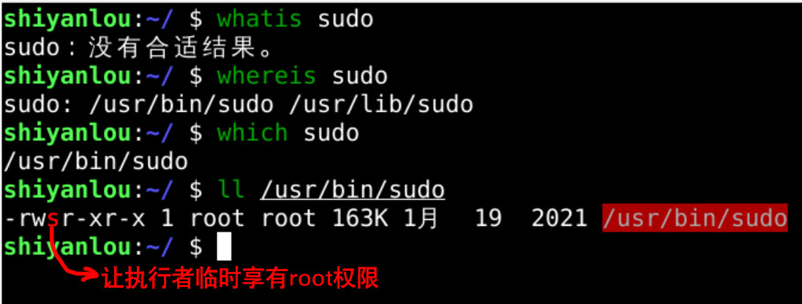
- sudo的用户执行权限为s
- 也就是让执行者拥有root权限
- 那什么是root权限呢？
root
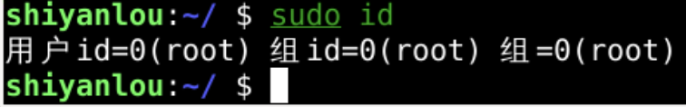
列表
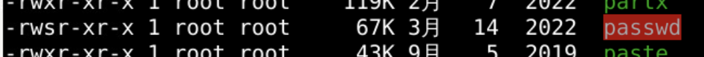
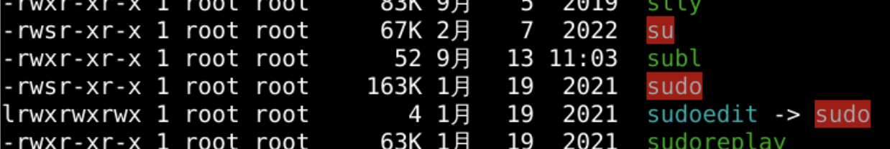
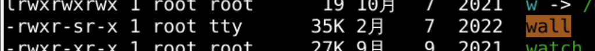
- 还有一些棕色的文件这些文件如何理解？
- 先去总结一下
总结 🤨
- 我们这次研究了如何让用户可以以管理员身份运行程序
- 如何避免每次都要输入密码呢？
- 在/etc/sudoers.d里面添加用户名对应的文件
- 设置此用户不用输入密码就可以执行sudo命令
- 为什么sudo拥有超级管理员的权限呢？
- 因为sudo的权限是s
- 代表sudo会以root的权限运行
- 从视觉上看到是红色的
- 还有一些程序(wall)是黄色的